Community
An interactive narrative and experience
Explore how walkable cities and socialbility play a viable role in community, wellbeing, and happiness.
Explore how walkable cities and socialbility play a viable role in community, wellbeing, and happiness.
Alex wakes up and starts their day
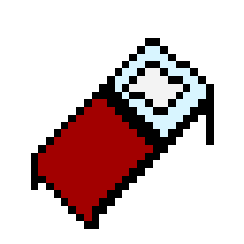Jordan wakes up and starts their day
They get ready for their day. They might have a quick breakfast or none at all.
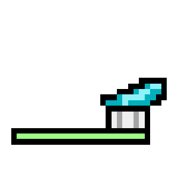They decide to wake up earlier than usual. They're able to cook a full breakfast before going to work.
Distance along with super congested traffic forces Alex to leave the house at 8:00 in order to get to work on time.
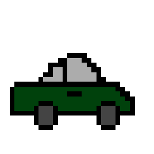A short walk to the train along with quick, efficent public transportation makes for a quick commute to work
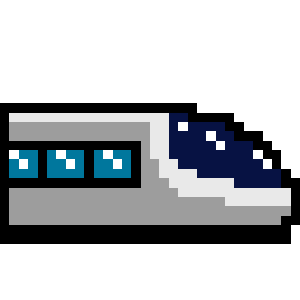Begins working on tasks and attends meetings
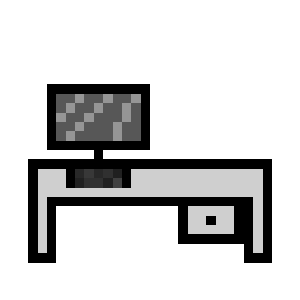Begins working on tasks and attends meetings.
Eats lunch quickly either in car or alone in cubicle
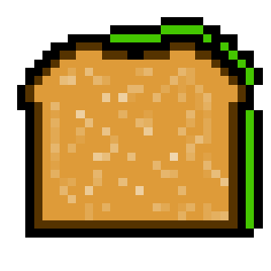Jordan is able to catch a bite with friends who work nearby. A longer lunch with nearby restaurants allows for this.
They spend the rest of the day at work even if all tasks for the day are done. Has to make themselves look busy or create their own busywork.
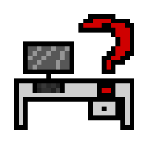Once done with tasks for the day or once it hits 5:00PM, they are able to leave work.
Today, Jordan finishes their day at 2:00PM.
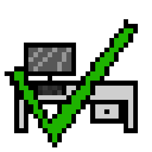...still stuck at the desk
Finally able to commute back home
Commute back home
Jordan decides to meet up with friends who live close by. Walkable cities allows it to become easier to hang out with friends
Today, they decided to have a small picnic at a local park and explore an art market
This is Alex's for supper time due to apetite and time constraint.
Cooks up a simple dinner and watches a TV show while eating.
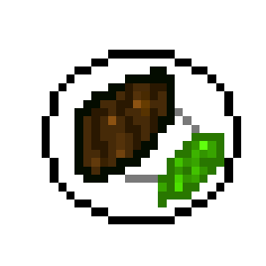Jordan has a flexible eating schedule. They decide to eat at this time.
Today, they cooked a simple dinner and enjoyed an episode of TV while eating.
Alex relaxes and rewinds around this time, but feels super tired and burnt out.
They spend today watching TV and scrolling on social media alone.
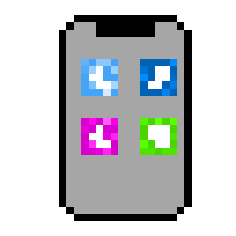Jordan usually relaxes and rewinds around this time.
They decided to journal, play video games, and stop by a friend's house.
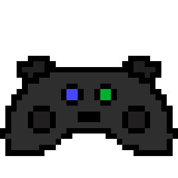Alex gets ready for bed and falls asleep.
Jordan gets ready for bed and falls asleep.
Choose all options that apply
Alex spent 0 hours interacting with anyone. Only 30 minutes if we are nice and include basic interactions like greeting coworkers.
9.5 hours were dedicated to work including commute. That is around 61% of their time awake.
5 hours were spent doing somewhat enjoyable activities including lunch and dinner. That is only 32.5% of their day.
Alex spends a majority of their day dedicated to labor and has no time and energy to see friends during the weekday.
Jordan had around 6 hours of social time. That is 38.7% of their time awake.
6 hours were dedicated to work including commute. That is also 38.7% of their time awake.
However, another 3.5 hours were dedicated to relaxing and enoying hobbies. That is 23% of their time awake.
In general, Jordan spends around 61% of their day enjoying life. This is the same amount of time Alex spends at work!
Lonliness is correlated to both poor physical and mental health. Higher work hours is also correlated with higher levels of stress and mental health issues such as depression and anxiety.
People with closer relationships and/or socialize more tend to be happier and healthier both mentally and physically.
It is natural that we would be happier and healthier when we see our friends more and interact with those around us. We need a society that focuses on community to achieve this.
Walkable cities combined with a relaxed work culture allows us to hang out with friends and meet new people easily. This heightned sociability would lead to less lonliness, and thus, a happier and healthier society.